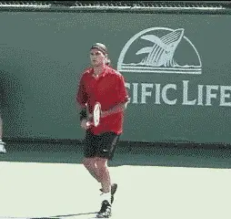
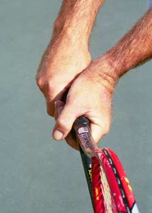

Private Lessons: Understanding The Backhand Grips¶
By Kerry Mitchell¶

Modern one-handers like Roger Federer have the explosive firepower of the best two-handed players.
In comparison to the forehand, which can be hit with 4 or 5 distinct grip styles, the backhand grips are much simpler. For the one-handed backhand there are just two options: the continental grip (see part 1 of this series) or the eastern grip.
On the two-handed backhand, the grip for the dominant, or bottom hand (i.e., the right hand for a right-hander) should be a continental. This can be combined with either an eastern or a mild semi-western grip with the top (or left) hand.
One-Handed Backhand
The one-handed backhand, once the standard in the game, is on its way back after years of being considered a second-class citizen. Many of the top players have one-handed topspin backhands equal in firepower to the two-handed players. This marks a major evolution in the modern game.
In years past, one-handers hit mainly with slice (continental grip). There were two reasons. One, the slice backhand was a great rallying tool. With wood racquets there was little danger of the opponent producing a lot of energy off a slower ball. Two, the slice was a great weapon in terms of approaching the net, and the game, at the highest levels, was primarily serve and volley. The ball stayed low and slid through on the faster surfaces that were prevalent (3 of the 4 majors were played on grass courts).

**The eastern backhand grip allows you to drive the ball with topspin.**
The players of the past were so proficient at controlling speed and angle with the slice that the drive backhand was used in a very limited fashion. When players did drive the ball they usually hit it flat or even with a little bit of underspin, for example, the \"slice drive\" of Ken Rosewall.
But as the speed of the game increased with the two-handed backhand and the improving racquet technology, one-handers found they needed to hit more topspin to control the ball. This necessitated a change in grip position from the continental to the eastern.
Eastern Backhand
The eastern backhand grip can be used to hit either flat or topspin balls. Much like the eastern forehand grip, it requires a player to take the ball on the rise more often, which also requires better movement and preparation.
This is the major reason why most one-handed backhand players, at the club level, still slice more often in match situations. The continental grip (underspin grip) allows a player to hit late balls and high balls more effectively, a situation that can be traced mainly to bad footwork and slow preparation.
To be a complete one-handed player, however, requires the ability not only to slice but to drive the ball flat and also with at least some topspin. This is obviously true in the pro game. It's also a big advantage at the club level.

**Visualizing the racquet head above the wrist is essential to controlling the eastern backhand.**
As with all grips, the secret to developing control with the eastern backhand grip is mental imaging. The player must develop mental images which lead to the correct position of the racquet head at contact.
On the one-handed backhand, there are three key mental pictures. The first is the image of the racquet head above the wrist. This image is essential to controlling the ball, whether the shot is hit with topspin or slice.
The leverage on the one-handed backhand is better when your hand position is near waist level. The only way to play higher balls and keep the hand at that level is to raise the racquet head to the level of the ball.
If you raise the hand to the ball level, there is a tendency to drop the racquet head causing the ball to fly out. This is why the image of the racquet head above the wrist is critical.

**The mental image of the closed racquet face counteracts the natural tendency to open the hand to the sky.**
The second image is of the racquet face partially closed at contact. As I discussed with the forehand grips, this image counteracts the natural tendency for players to open their palms toward the sky.
The more vertical the swing pattern and/or the greater the swing velocity, the more the natural reaction of racquet hand to open toward the sky, causing the racquet face to open.
Another way to develop this position is with the image of the knuckles pointing somewhat towards the ground. Every attempt should be made to maintain this image throughout the swing path to guarantee consistent contact and the desired reaction of the ball off the strings.
Learning to control the amount of topspin, much like on the serve, will go a long way in a players ability to play at higher levels.

**Another way to control the racquet head is the image of the knuckles turned toward the ground.**
The ability to drive the one-handed backhand with topspin during match play is difficult for most club players but can be achieved by improving footwork. This is done by learning to hit the one-hander with open stance positioning, emphasizing the alignment of the back foot with the path of the incoming ball (left foot for righties--right foot for lefties). This can take a while to become comfortable because, just like an open stance forehand, the trunk of the body has to rotate (read: turn position) to generate good power.
The eastern backhand grip position can be used for slicing the one-handed backhand, but especially at the higher levels of the game this will be difficult. This is due to the many quick low balls a player receives that require opening the racquet face without the dropping of the racquet head (much like low volleys).
The right solution to be a complete one-handed player is to combine the ability to drive with the eastern grip with the ability to slice using the continental.

**The best grip combination for two hands, a continental combined with an eastern or mild semi-western.**
Two-Handed Backhand
The two-handed backhand, which has become a dominate force in the game today, is the easiest way for beginners to learn quickly. Kids can start the process of playing points and matches much earlier in their development with the two-handed backhand. This is one of the reasons why younger and younger players have been successful on the pro tour in the last 20 years.
Players like Chris Evert, Tracy Austin, Jimmy Connors, and Bjorn Borg showed the world how effective the two-handed backhand can be. They had so much success that, for a while, it was thought the two-hander was the only way to make it in today's high-speed game.
Fortunately, that train of thought has waned with the resurgence of the one-hander. But even with that resurgence, the two-handed backhand shows no sign of losing its popularity. The two-handed backhand is here to stay.
Two-Handed Backhand Grips
One of the numerous reasons the two-handed backhand is so much easier for beginners to learn is the grip positions. The dominant (bottom hand) shifts from a forehand grip to the continental grip position. The non-dominate (top hand) is placed in an eastern grip position, or a mild semi-western.
It is possible to use a non-continental grip position (i.e., your usual forehand grip) on the dominate hand, but this makes it awkward to coordinate the proper racquet face angle at contact.

It can also cause what I call a \"dominate hand lead\" in the swing, making the shot less powerful. The more western the forehand grip, the greater the chance of this happening.
Keeping the forehand grip on the dominate hand also makes slicing the ball very difficult because the face of the racquet is too open at contact. At the high levels of the game, you rarely, if ever, see a player keep the forehand grip position on the dominant hand, due to the necessity of producing a quality slice backhand.
The driving force in the two-handed backhand is the non-dominant arm (left arm for righties). In earlier two-handers this was not always the case, but as the need for more power and control in the game has come about, there has been an increased need to swing like the forehand.
This is why you see tremendous power generated by the pros on the two-handed backhand today (To study a great model for the two-handed backhand, check out Matat Safin in the Advanced Tennis high speed DVDs. link.) Much like the modern forehand, they use extreme torso rotation and uncoiling, and slingshot the rear arm through the contact at incredible speeds.
The new-found speed makes the need to control the angle of the racquet face very important. Unlike the forehand, however, there is no need to go to a full semi western or a western grip on the non-dominate arm to create racquet face closure. This is because the two hands work together to attain the proper angle, using a swing plane that is less steep than the westernized forehand.

**The two-handed key mental image of the racquet head above the wrists and the closed racquet face.**
The combination of the continental position (dominate hand) and the eastern position or mild semi-western (non-dominate hand) is quite efficient in controlling the racquet head. This combination also makes the two-hander more efficient in terms of swing length (shorter). This makes difficult balls (high and low) easier to handle under pressure.
Much like the forehand and the one-handed backhand, the two key mental images for the two-hander are of the racquet head above the hands at contact, and of the partially closed racquet face.
We actually see this physical position-face closed, racquet head above wrist--on more and more balls in the pros, particularly high balls. This image may not be the reality in your game, or may exaggerate the reality. But it is necessary to create it in your mind's eye in order to control the shot consistently.
|  | |
| In the modern pro game, players like Safin and Federer, at times, actually model the key image of the racquet head above the wrists. |
Two-Hands or One?
I am often asked, which backhand is better to use? I used a two-handed backhand for 18 years before I had to switch to a one-hander (due to an injury to my non-dominate hand) and have used the one-handed backhand for the last 10 years.
Having played extensively with both in different parts of my career I can honestly say that neither is better. Each has its benefits and its problems.
What I found, which is surprising to some, is that hitting the one-handed backhand well required a more acute awareness of my movement. Learning to drive the one-hander in tournament play required me to focus intently on aligning my rear foot to the ball, which made it possible to be on time more often.

**To drive the the one-hander in tournament play, learn to align your rear foot to the oncoming ball.**
I also had to focus much more on the image of the closed racquet face at contact and the image of the racquet head above the wrist (having previously played with two-hands made this process much easier). What I like about the one-hander is the explosive nature of the shot. Hitting a great one-handed backhand is far more thrilling then hitting a great two-handed shot.
The two-hander allowed me more freedom to adjust. Simply put, I did not have to be as good with the two-hander. I could get away with slight errors in movement and technique and still compete well. Both mentally and physically, it was easier to adapt to difficult balls with two hands. I started playing with the two-hander as a teenager because my heroes, Borg and Evert used it, and as a beginner, I found the two-hander much easier to learn than even the forehand.
I did learn how to hit a one-handed slice later, mainly out of the necessity to reach for wide balls and low balls. Learning to hit a one-handed slice was good training for hitting a one-handed backhand volley. As noted below, the transition to the one-handed drive was far more difficult.
Should You Switch?
One question I am often asked, is should I switch? My firm answer is no. The reason is the time it takes. Like most players I was a bit naive thinking I could make the switch to the one-hander easily, having already learned how to hit a one-handed slice.
It took me 7 years to bring my new one-handed backhand up to the level of the old two-hander. It took yet another 2 years to bring it to where it is today, which is a far greater shot than my two-hander ever was. Making the switch requires learning a whole new stroke from scratch, but without the luxury of playing at a lower level to hone the skills necessary.
I hope this series on understanding grips will help you have a greater awareness of what you do and what you can do to improve. Deep down all players want to play to their ultimate potential and understanding how grips affect the game goes a long way in realizing that dream. My most important thought: Have Fun!
|  | numerous ranked junior players and coached |
| a series of championship high school teams. | |
| He was highly ranked both sectionally and | |
| nationally in men's 30 and 35 singles. | |
| After 15 years as the Head Teaching Pro at | |
| the John Yandell Tennis School in San | |
| Francisco, California Kerry and his partner | |
| are now splitting time between homes in | |
| Merida, Mexico and Toronto, Canada. He has | |
| continued to coach and to have great | |
| competitive success winning Canadian | |
| National seniors titles---not to mention | |
| continuing to write articles for | |
| Tennisplayer from his unique perspective. |